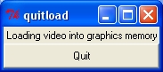

The Stereo Spin program is used to display stereo images from a spinning video from a Microsoft DirectShow-compatible video file or from a set of TIFF, PPM, PGM, BMP files. It can also read raw, uncompressed 8-bit video files. The program currently runs only on Windows, but it uses the portable openGL library for rendering, the portable Tcl/Tk for user interface control, and the portable ImageMagick package for reading images.
An installer for the program and manual can be downloaded from the CISMM software download page. It requires Microsoft Direct X version 9.0a or higher to be able to read movie files on Windows.
The program installs itself by default into C:\Program Files\CISMM, and puts its running shortcuts into Start Menu/All Programs/CISMM/Stereo Spin.
The development, dissemination, and support of this program is paid for by the National Institutes of Health National Institute for Biomedical Imaging and Bioengineering through its National Research Resource in Computer-Integrated Systems for Microscopy and Manipulation at the University of North Carolina at Chapel Hill. This program is distributed without charge, subject to the following terms:
The program is run by dragging a video file or image file onto the desktop icon that was created when the program was installed. To select a stack of image files that are numbered consecutively, drag any one of the files onto the icon. It can also be run by selecting it from Start Menu/All Programs/CISMM/Stereo Spin. If you run the program directly by double-clicking on the icon, it will ask for a video or image file (AVI, TIF, or BMP, PPM, raw) that it should open.
Stereo Spin uses OpenGL stereo, and requires a video card and driver set that supports this. For nVidia graphics, this requires a Quadro-type card with an external stereo-sync connector to work with the glasses (the DirectX/GeForce game-type stereo does not work with this program). For other manufacturers, check their specifications and drivers to ensure that they support OpenGL stereo.
This program assumes that the video file being read in is a 360-degree spinning-viewpoint movie, where there is an even separation in angles between frames in the movie. The last frame in the movie should not be the same as the first frame, but rather should have the same angle separation from the first frame as each frame in the movie has from its neighbor. The separation between frames does not have to be 1 degree, so long as it is the same between each frame; thus the number of frames does not have to be 360. Movies that play as a continuous spinning loop without jerkiness when shown in a repeating mode in a media browser should work fine.
The rotational-movie mode from the ImageSurfer program can generate such movies, as can ParaView and other programs.
The movie can spin either to the left or to the right. The program starts expecting movies where the object spins to the left, but the L and R keys can be used to switch direction as described below.
When the program is run and a file is selected, three windows will appear. The control panel named tk that appears on the top when the program is run (shown here to the right) has instructions for using the keyboard and mouse to control the view, and a button to quit the program. The image window that appears below it shows the frames as they are being loaded from the video file and then a (by default) spinning stereo view of the file.
While the frames from the video are being loaded, the dialog box to the right will appear (and each frame will be displayed as it is loaded). If you want to interrupt the loading and quit the program, simply press the Quit button on this dialog box. Once the entire video file has been loaded, this box will disappear.
If the program cannot display stereo on this computer, a warning dialog box will appear to the right of the main tk window to let you know that it is not available.
The left mouse button can be used to control the viewpoint. Press the button and then move either left or right to spin the stereo view around the object. If the view seems to move in the wrong direction and the stereo seems wrong, use the R key to switch the direction of motion away from the default.
The stereo window by default shows up at the same size as the original movie. You can resize the window however you like, and the movie's size will be adjusted.
The key commands for the program are only available when the 3D window has focus; click on its title bar to enable them if focus is lost. The commands are not case-sensitive, either shifted or unshifted characters will work. The program recogizes the following commands: